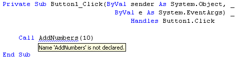
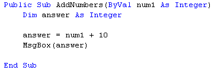
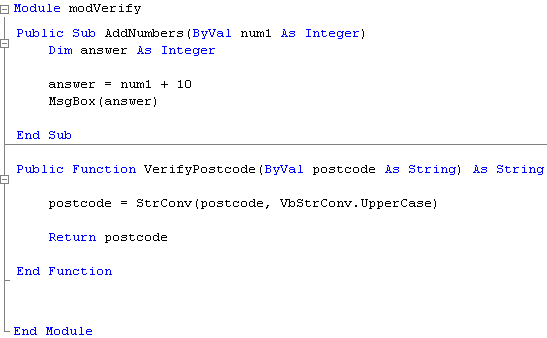
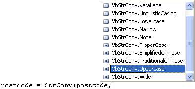

Standard Modules Continued
This lesson continues on from the previous part: Standard Modules in VB .NET
In the previous lesson, we saw that we had some problems with our code. VB placed a blue wiggly line under the name of our Sub:

What VB is saying is that it can't see your new Subroutine from the inside of the button code. It thinks you haven't got a Sub called AddNumbers. The reason it can't see it is we made the Sub Private. Only code inside of the modVerify Module can see a Private Sub. If you want the Sub or Function to be available to all the code in your project, including the button, you have to make then Public. This involves nothing more than changing the word Private to Public. Amend your Sub to this:

When you make the change from Private to Public, the blue wiggly line should disappear from the Button code
Run your programme and test it out. Click your Button. You should get a message box saying "20".
We'll now add a Function to our new Module.
So bring up the code for your module. When you have your new Module displayed, type in the following Function:
Public Function VerifyPostcode(ByVal postcode As String) As String
postcode = StrConv(postcode, VbStrConv.UpperCase)
Return postcode
End Function
When you're finished, your coding window should look like this:

No more reading these lessons online - get the eBook here!
All the function does is to check a Postcode to see if the letters in it are all in capitals. That's because, quite often, people will enter a postcode as this:
ts1 4jh
What you want is a Postcode that reads:
TS1 4JH
The new function will convert a postcode handed to it, and make sure the letters are all capitals.
The inbuilt function that does the converting is worth exploring. It's this:
StrConv( )
This is short for String Conversion. In between the round brackets, VB needs you to put two things: the string you want to convert, and what sort of conversion you want. As soon as you type a comma after the string you want to convert, VB pops up a box of available conversion types:

A lot on the list are rather baffling. But the one we used was the UpperCase one. Simple double click an item to add it to your code. This gave us the following:
StrConv( postcode, VbStrConv.UpperCase )
The function will then convert all the letters in postcode to capitals.
Another useful one on the list is ProperCase. What this will do is take a string and convert all the letters of the first word (or words) to capitals. This is useful for addresses. So if somebody entered this as an address:
49 falkland street
The VbStrConv.ProperCase item would convert it to this:
49 Falkland Street
But back to our code.
Select your Form again. Then add a new Button, and a Textbox to it. Change the Text property of the Textbox to ts1 4jh. Double click the button, and add the following code for it:
Dim CheckPostcode As String
Dim ConvertPostcode As String
CheckPostcode = Trim(TextBox1.Text)
ConvertPostcode = VerifyPostcode(CheckPostcode)
TextBox1.Text = ConvertPostcode
The first thing we do is get the Text from the textbox. This is passed to a variable called CheckPostcode. The next line calls our new function. We hand it the postcode we got from the textbox:
ConvertPostcode = VerifyPostcode( CheckPostcode )
When our function has finished the conversion, it will hand back (Return) the result and put it in the variable ConvertPostcode. This is then placed back inside the textbox.
Run your programme, and click the new button. You should find that the letters in the postcode are converted to capitals.
The point about creating a Module to house all your Subs and Functions is that they are in a separate file. You could write more Subs and Functions for your Module, ones that validate text coming from a textbox (an email checker, for example, or one that uses the ProperCase string conversion). You would then have all this code in one file that you could add to totally different projects. If the Subs and Functions were in the same code for the Form, you would have to import the whole Form before you could use the very useful Subs and Functions you created.
But that's enough about Modules. We'll move on to a new section.